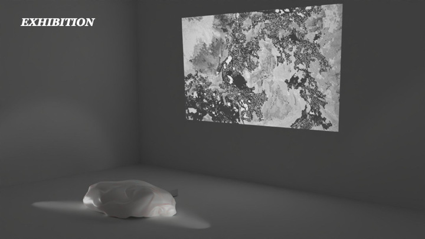
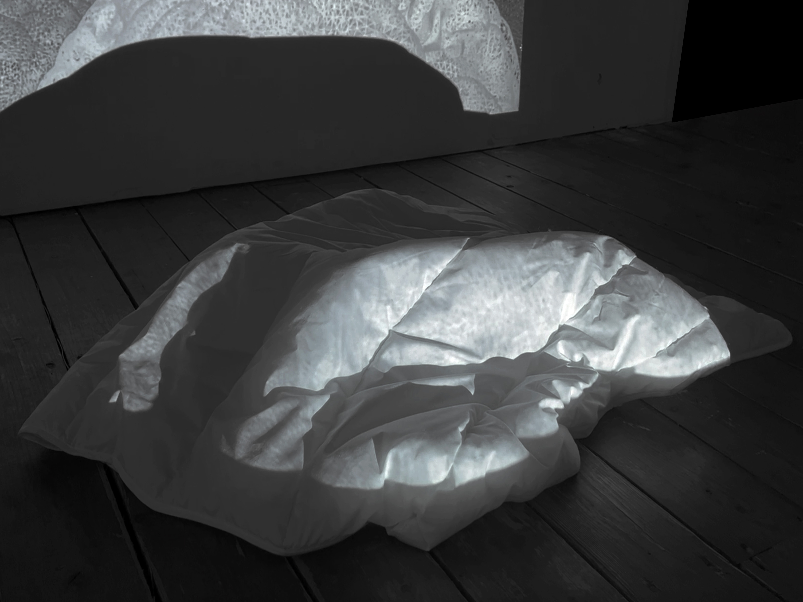

Into the Dream is an installation that uses a moving blanket as a medium between reality and dreams, inviting viewers into an individual dream space.
Concept / Installation / Object Direction / Video Documentation
Installation / Moving Object / Shadow / Spatial Experience
Consciousness / Preconsciousness / Unconsciousness / Dream
The work explores the boundary between consciousness and unconsciousness through a moving blanket. The blanket functions as a preconscious medium, connecting the visible world of reality with the invisible landscape of dreams.
Shadows become a visual metaphor for the unconscious, allowing viewers to enter a personal dream space and experience emotions emerging from the subconscious mind.

The moving blanket creates a shifting relationship between object, light, and shadow. Through this simple physical movement, the installation transforms an ordinary object into a threshold between waking perception and dream-like imagination.

The installation was documented through still images and video, capturing how the blanket, shadow, and surrounding space form a quiet dream-like environment.

